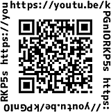

第36回埼玉県原爆死没者慰霊式が開催されました
7月25日、さいたま共済会館（さいたま市浦和区）で、第36回埼玉県原爆死没者慰霊式が開催され、被爆者やご遺族、来賓、実行委員会団体代表者など83人が参加しました。
埼玉県原爆死没者慰霊式は｢原爆死没者慰霊の碑｣が建立された1986年から開催され、今年で36回目となりました。第30回からは場所を室内施設に移して行われています。被爆者の高齢化にともない、埼玉平和市民5団体懇談会が呼びかけ、埼玉県原爆死没者慰霊式実行委員会を結成し、埼玉県原爆被害者協議会(以下、しらさぎ会)とともに準備・運営などにあたりました。
式典は、県内外からお寄せいただいた平和のメッセージの映像、埼玉合唱団が慰霊碑の前で合唱した「青い空は」の映像から始まり、｢開会のことば｣、埼玉県内の原爆死没者名簿の奉納へと進みました。2020年度に埼玉県内で亡くなられた方78人を含む1,758人のお名前が記載された名簿が奉納され、黙とうを捧げました。続いて行われた主催者慰霊のことばでは、しらさぎ会の原明憲会長が｢核兵器禁止条約が発効したことは被爆者の核兵器廃絶の思いと行動、それを支えてくださった世界の皆様の力が結実したものです。核兵器のない社会に確実に一歩踏み出しました。核兵器の非人道性を引き続き訴え、核兵器のない世界の実現を目指します」と述べました。来賓のあいさつ、メッセージ紹介に続いておこなわれた浦和高校3年生の清水雅文さん、武田大輝さんによる平和の誓いでは「日本が平和であっても、世界のどこかで戦争や核兵器が使用されると言う悲劇が起きては本当の平和とは言い難いです。私たち若い世代が76年前に起きたことを胸に刻むことこそ、過去を繰り返さない第一歩となります」と誓いの言葉が述べられました。その後、聞き書き行動実行委員会が聞き書きした被爆の証言の朗読、献花・折り鶴奉納と進み、最後に平和の願い、核兵器廃絶の思いが、音楽に乗って世界に広がっていくことを祈りながら｢原爆を許すまじ｣を会場に流し、終了しました。
慰霊のことばを述べるしらさぎ会原会長
浦和高校清水さん、
武田さんによる平和の誓い
会場には埼玉合唱団による
歌声が流れました
なお、当日の映像を引き続きYouTubeでご覧いただけます。
または、2次元バーコードからご覧ください。
